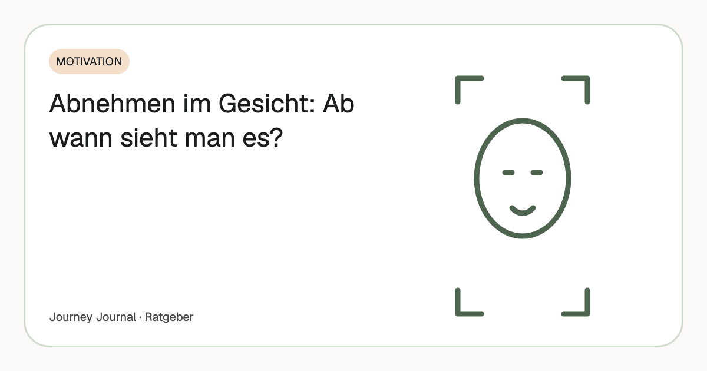

Ratgeber · Motivation · 8 Min. Lesezeit
Abnehmen im Gesicht: Ab wann man es sieht und warum es gezielt nicht geht
Oft kommt der erste Kommentar zum Gesicht: „Du siehst schmaler aus.“ Dafür gibt es eine messbare Schwelle. Laut einer Studie von Re und Rule (2016) bemerken andere eine Veränderung im Gesicht ab etwa 1,3 BMI-Punkten, bei 1,75 m Körpergröße sind das rund 4 Kilo. Gezielt nur im Gesicht abnehmen kannst du allerdings nicht. Hier liest du, was die Forschung dazu sagt, warum dein Gesicht von Tag zu Tag anders aussieht und wie du den Verlauf mit einem täglichen Selfie fair festhältst.

Teil unseres Guides: Progress-Fotos: Der komplette Guide – Aufnahme, Rhythmus, Vergleich, Speicherung
Kurz gesagt
- Andere bemerken eine Veränderung im Gesicht ab etwa 1,3 BMI-Punkten (Re und Rule, 2016). Bei 1,75 m Körpergröße sind das rund 4 Kilo.
- Gezielt im Gesicht oder am Kinn abnehmen geht nicht. In Studien zu Bauch- und Beintraining (Vispute 2011, Ramírez-Campillo 2013) ging das Fett an der trainierten Stelle nicht messbar zurück.
- Wasser nach salzigem Essen, einer kurzen Nacht oder direkt nach dem Aufstehen lässt das Gesicht von Tag zu Tag anders aussehen. Aussagekräftig ist der Verlauf über Wochen.
- Für faire Selfies brauchst du gleiches Licht, gleichen Abstand, gerade Kopfhaltung und einen neutralen Ausdruck. Aus 30 Zentimetern wirkt die Nase rund 30 Prozent größer als aus der Ferne (Ward 2018).
Ab wann man Abnehmen im Gesicht sieht
Die Psychologen Daniel Re und Nicholas Rule haben 2016 untersucht, wie klein eine Gewichtsveränderung im Gesicht sein darf, damit andere sie noch bemerken. Sie ließen Versuchspersonen Gesichter beurteilen, die sich im Body-Mass-Index unterschieden. Ab einem Unterschied von etwa 1,33 BMI-Punkten erkannten die Betrachter, dass sich das Gewicht verändert hatte.
Was heißt das in Kilo? Bei 1,75 m Körpergröße entspricht ein BMI-Punkt rund 3 Kilo. Die Schwelle liegt dort also bei etwa 4 Kilo. Wer kleiner ist, erreicht sie mit weniger Kilo, wer größer ist, braucht mehr.
Damit sich der Gesamteindruck eines Gesichts änderte, in der Studie gemessen als eingeschätzte Attraktivität, brauchte es ungefähr doppelt so viel: 2,38 Punkte bei Frauen und 2,59 bei Männern. Für dein Foto-Tagebuch ist die erste Zahl die nützlichere. Sie sagt dir, ab wann ein sauber gemachter Vergleich überhaupt einen Unterschied zeigen kann. Die Zeitleiste vom ersten Tag bis Woche 12 steht in einem eigenen Artikel.
Warum andere es zuerst im Gesicht bemerken
Im Alltag sieht dich dein Umfeld fast immer angezogen. Bauch, Hüfte und Beine stecken in Kleidung, das Gesicht bleibt sichtbar. Wenn eine Kollegin sagt, du sähest schmaler aus, meint sie deshalb meist Wangen, Kinnlinie und Hals.
Du selbst siehst dein Gesicht jeden Tag im Spiegel. Kleine Schritte fallen dir dadurch kaum auf. Wer dich nur alle paar Wochen trifft, vergleicht mit einem älteren Bild im Kopf und sieht den Sprung. Deshalb hören viele das erste Kompliment, bevor sie selbst etwas bemerken. Warum du nach zwei Wochen oft noch keinen Unterschied siehst, erklärt ein eigener Artikel.
Wo dein Körper zuerst Fett abgibt, ist individuell. Manche bemerken es früh im Gesicht, andere zuerst an der Taille. Eine feste Reihenfolge, die für alle gilt, gibt es nicht.
Kann man gezielt im Gesicht abnehmen?
Nein. Die Idee, Fett an einer Stelle durch Training genau dieser Stelle loszuwerden, heißt in der Sportwissenschaft Spot Reduction. Am Bauch und an den Beinen ist sie gut untersucht, und das Ergebnis ist eindeutig.
Bauchtraining und Beintraining im Test
Vispute und Kollegen (2011) teilten 24 untrainierte Erwachsene in zwei Gruppen. Die eine machte sechs Wochen lang an fünf Tagen pro Woche sieben Bauchübungen, die andere trainierte nicht. Die Ernährung blieb in beiden Gruppen gleich. Am Ende schaffte die Trainingsgruppe deutlich mehr Wiederholungen bei einer Bauchübung. Bauchumfang, Bauchfett und Hautfaltendicke am Bauch hatten sich aber nicht messbar verändert.
Ramírez-Campillo und Kollegen (2013) gingen einen Schritt weiter. Elf junge Erwachsene trainierten zwölf Wochen lang nur ein Bein an der Beinpresse, mit 960 bis 1.200 Wiederholungen pro Einheit. Die Fettmasse im ganzen Körper sank um 5,1 Prozent. Am trainierten Bein änderte sich das Fett jedoch nicht messbar. Abgenommen hatte es vor allem an Armen und Rumpf.
Was das für Gesicht und Doppelkinn heißt
Für das Gesicht gibt es keine vergleichbar sauberen Studien. Es gibt aber auch keinen Grund anzunehmen, dass Kauübungen, Grimassen oder Kinnübungen dort anders wirken als Bauchübungen am Bauch. Fett an Wangen und Kinn geht zurück, wenn du insgesamt abnimmst. Wann es dort sichtbar wird, entscheidet dein Körper. Du musst für dein Gesicht also nichts Besonderes tun.
Gesichtsyoga und Gesichtsübungen ehrlich eingeordnet
Van Borsel und Kollegen (2014) haben in einer systematischen Übersicht alle Studien zu Gesichtsübungen zusammengetragen, die sie finden konnten. Es waren neun, alle mit positivem Ergebnis. Keine davon hatte eine Kontrollgruppe oder eine zufällige Zuteilung, und meist bewerteten die Autoren oder die Teilnehmenden das Ergebnis selbst. Das Fazit der Übersicht lautet, dass die Belege nicht ausreichen, um eine Wirkung zu beurteilen.
Häufig zitiert wird eine Pilotstudie von Alam und Kollegen (2018). Frauen mittleren Alters machten 20 Wochen lang Gesichtsyoga, zuerst täglich 30 Minuten, später jeden zweiten Tag. Von 27 Teilnehmerinnen blieben 16 bis zum Ende dabei. Ihr geschätztes Alter sank im Schnitt von 50,8 auf 48,1 Jahre. Eine Kontrollgruppe gab es nicht, und der Gründer des verwendeten Übungsprogramms war Mitautor.
Für dein Ziel ist ein Detail wichtig. Verbessert hatte sich in dieser Studie vor allem die Fülle der Wangen. Gesichtsyoga zielt also eher auf ein volleres als auf ein schmaleres Gesicht. Wenn dir die Übungen guttun, spricht nichts dagegen. Als Mittel gegen Gesichtsfett oder Doppelkinn taugen sie nach heutigem Stand nicht.
Warum dein Gesicht jeden Tag anders aussieht
Wenn dein Gesicht heute runder wirkt als gestern, ist das selten Fett. Fett baut sich langsam ab und langsam auf. Was sich über Nacht ändert, ist meist Wasser.
Nach dem Aufstehen wirkt das Gesicht bei vielen voller, weil sie stundenlang flach gelegen haben. Ein salziges Abendessen, Alkohol oder eine kurze Nacht können das verstärken. Im Lauf des Vormittags gleicht es sich oft wieder aus. Aus ähnlichen Gründen schwankt auch die Waage, mehr dazu im Artikel warum dein Gewicht täglich schwankt.
Für dein Foto-Tagebuch folgt daraus eine einfache Regel. Ein einzelnes Selfie sagt wenig. Vergleiche lieber Woche 1 mit Woche 6 als gestern mit heute.
So hältst du den Verlauf mit dem täglichen Selfie fair fest
Ein Selfie ist schnell gemacht, und genau darin liegt die Falle. Schon kleine Unterschiede bei Licht, Abstand oder Kopfhaltung verändern, wie schmal ein Gesicht wirkt. Die Regeln für vergleichbare Progress-Fotos gelten auch hier. Fürs Gesicht kommen ein paar eigene dazu.
Licht und Uhrzeit
Fotografiere jeden Tag zur gleichen Zeit, am besten nicht direkt nach dem Aufstehen. Stell dich mit dem Gesicht zum Fenster. Licht von oben, etwa von einer Deckenlampe, wirft Schatten unter Augen und Kinn und verändert die Form des Gesichts im Bild.
Abstand und Brennweite
Die Frontkamera hat ein Weitwinkelobjektiv, und je näher du dran bist, desto stärker verzerrt es. Ward und Kollegen (2018) haben das berechnet. Aus etwa 30 Zentimetern, einem typischen Selfie-Abstand, wirkt die Nase bei Männern rund 30 Prozent und bei Frauen rund 29 Prozent größer als bei einer verzerrungsfreien Abbildung. Aus 1,5 Metern gibt es praktisch keinen Unterschied mehr.
Wichtiger als der perfekte Abstand ist der gleiche Abstand. Bist du jedes Mal gleich weit weg, ist auch die Verzerrung jedes Mal gleich, und der Vergleich bleibt fair. Ein Stativ mit Selbstauslöser hilft dabei. Ein ausgestreckter Arm ist jeden Tag ein bisschen anders lang.
Kopfhaltung und Ausdruck
Halte die Kamera auf Augenhöhe und den Kopf gerade. Ein leicht gesenktes Kinn schiebt die Haut am Hals zusammen und erzeugt ein Doppelkinn, das im nächsten Bild mit erhobenem Kopf wieder verschwunden ist. Schau neutral in die Kamera, mit entspanntem Mund. Ein Lächeln hebt die Wangen, und es fällt jeden Tag etwas anders aus. Wenn du lange Haare hast, binde sie immer gleich zurück, damit Wangen und Kinnlinie frei sind.
Seitenprofil für Kinn und Hals
Für Kinnlinie und Hals zeigt ein Foto im Profil oft mehr als eines von vorn. Wenn dich das Doppelkinn beschäftigt, mach einmal pro Woche zusätzlich ein Seitenprofil, mit gerader Kopfhaltung und Blick nach vorn. Wie das für den ganzen Körper funktioniert, beschreibt die Drei-Winkel-Methode.
Vorher und nachher im Gesicht vergleichen
Vergleiche dein Gesicht frühestens nach einigen Wochen mit dem Startfoto. Nach der Schwelle von Re und Rule zeigt sich ein Unterschied erst ab einigen Kilo, und die verlierst du bei einem gesunden Tempo nicht in wenigen Tagen. Leg beide Bilder in gleicher Größe nebeneinander und schau auf Wangen, Kinnlinie und Hals.
Siehst du noch wenig, ist das kein Rückschlag. Das Gesicht ist nur eine Stelle von vielen, und manchmal zeigen das Maßband oder die Kleidung früher etwas. Dein Startfoto bleibt trotzdem wertvoll, denn es lässt sich nie nachholen. Wo du solche Bilder sicher aufbewahrst, ohne dass sie in der Galerie landen, steht im Artikel über Körperfotos und Datenschutz.
Häufige Fragen
Ab wie viel Kilo sieht man Abnehmen im Gesicht?
Re und Rule (2016) fanden, dass Betrachter eine Veränderung im Gesicht ab etwa 1,33 BMI-Punkten erkennen. Bei 1,75 m Körpergröße sind das rund 4 Kilo. Kleinere Menschen erreichen die Schwelle mit weniger Kilo, größere mit mehr.
Nimmt man zuerst im Gesicht ab?
Nicht unbedingt. Wo der Körper zuerst Fett abgibt, ist individuell. Andere bemerken es aber oft zuerst im Gesicht, weil es im Alltag der Teil des Körpers ist, den sie ohne Kleidung sehen.
Kann man ein Doppelkinn gezielt wegtrainieren?
Nach heutigem Stand nein. Die Studien von Vispute (2011) zum Bauch und Ramírez-Campillo (2013) zum Bein fanden keinen Fettabbau an der trainierten Stelle, und für Kinnübungen gibt es keine besseren Belege. Fett am Kinn geht zurück, wenn du insgesamt abnimmst. Auf Fotos hilft eine gerade Kopfhaltung, weil ein gesenktes Kinn ein Doppelkinn stärker wirken lässt.
Hilft Gesichtsyoga beim Abnehmen im Gesicht?
Dafür gibt es keinen Beleg. Eine Übersicht von Van Borsel (2014) fand nur neun kleine Studien ohne Kontrollgruppe. In der Pilotstudie von Alam (2018) wirkten die Wangen nach 20 Wochen eher voller, also das Gegenteil eines schmaleren Gesichts.
Wie mache ich vergleichbare Vorher-Nachher-Selfies vom Gesicht?
Fotografiere jeden Tag zur gleichen Zeit mit Licht vom Fenster, immer aus dem gleichen Abstand, mit der Kamera auf Augenhöhe, geradem Kopf und neutralem Ausdruck. Ein Stativ hilft beim gleichen Abstand. Sehr nah aufgenommen verzerrt die Frontkamera stark: Aus 30 Zentimetern wirkt die Nase laut Ward (2018) rund 30 Prozent größer.
Quellen
- Re D. E., Rule N. O. (2016): Heavy Matters: The Relationship Between Just Noticeable Differences in Perceptions of Facial Adiposity and Facial Attractiveness. Social Psychological and Personality Science 7(1), 69 bis 76 – Wahrnehmungsschwelle im Gesicht bei 1,33 kg/m², Änderung des Attraktivitätsurteils ab 2,38 (Frauen) bzw. 2,59 kg/m² (Männer)
- Vispute S. S. et al. (2011): The effect of abdominal exercise on abdominal fat. Journal of Strength and Conditioning Research 25(9) – Sechs Wochen Bauchübungen ohne messbaren Effekt auf Bauchfett und Bauchumfang
- Ramírez-Campillo R. et al. (2013): Regional fat changes induced by localized muscle endurance resistance training. Journal of Strength and Conditioning Research 27(8) – Zwölf Wochen Training eines Beins: Fett sank im ganzen Körper, am trainierten Bein nicht
- Van Borsel J. et al. (2014): The effectiveness of facial exercises for facial rejuvenation: a systematic review. Aesthetic Surgery Journal 34(1) – Neun Studien ohne Kontrollgruppe, Belege für Gesichtsübungen unzureichend
- Alam M. et al. (2018): Association of Facial Exercise With the Appearance of Aging. JAMA Dermatology 154(3) – Pilotstudie, 16 von 27 Teilnehmerinnen abgeschlossen, keine Kontrollgruppe
- Ward B. et al. (2018): Nasal Distortion in Short-Distance Photographs: The Selfie Effect. JAMA Facial Plastic Surgery 20(4) – Aus 30 cm wirkt die Nase rund 30 % größer, aus 1,5 m praktisch unverzerrt
Dieser Artikel ersetzt keine ärztliche Beratung. Bei einer größeren Gewichtsreduktion ist eine medizinische Begleitung sinnvoll.